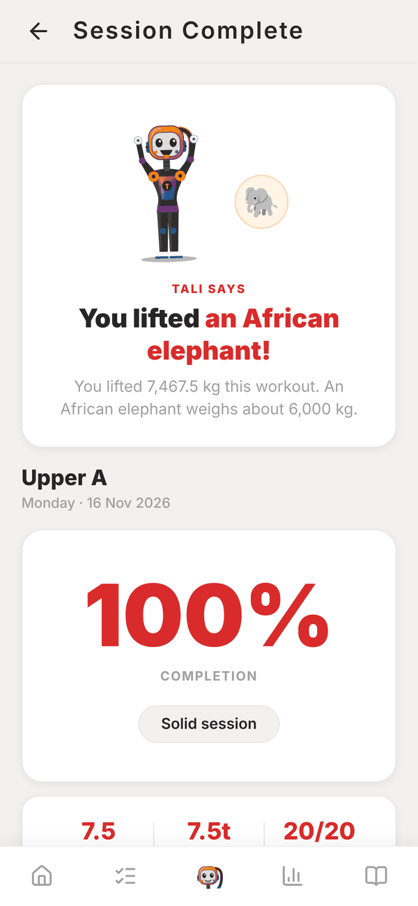
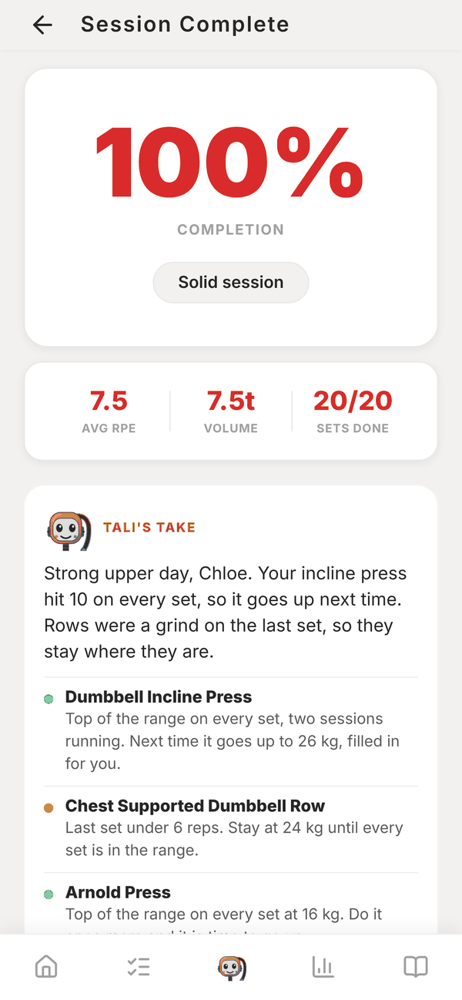
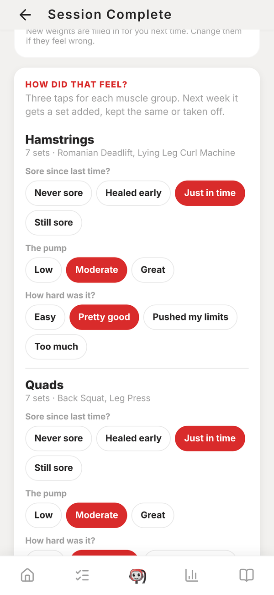
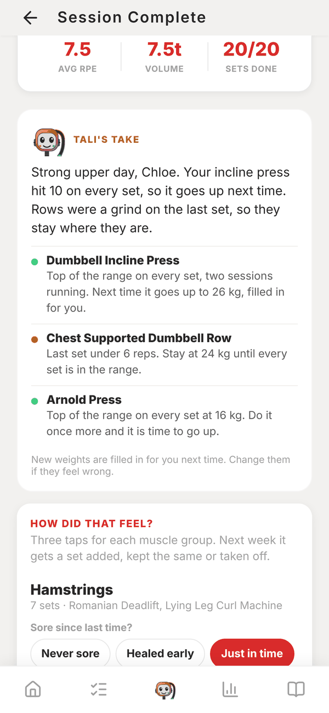

Totality Training guide
After a workout
Your workout summary, Tali's take, and three taps per muscle that set next week's sets.
When you finish, you see how the workout went and what changes next time.


The summary#
- Tali says compares the total you lifted to something you know, like an African elephant.
- Completion, your average RPE, the total volume and the sets done.
- Tali's take Training + AI: a short note on the workout and each exercise that changes. Weights that go up or ease back are filled in for next time. Change them if they feel wrong.
How did that feel?#


Training For each muscle group you trained, answer three questions:
- Sore since last time? Never sore, Healed early, Just in time or Still sore.
- The pump. Low, Moderate or Great.
- How hard was it? Easy, Pretty good, Pushed my limits or Too much.
The answers start on the ones that change nothing, so only tap what was different. Then tap Set next week's sets. Each muscle gets one set added, kept the same, or one set taken off, and the change goes straight into your programme for the weeks to come. On Training + AI, Tali adds a line about it. See How your weights and sets adjust for the rules.
Questions#
Do I have to answer every time?
No. If you skip it, your sets stay as they are.
Can I undo a set change?
Yes. Open the workout under My programmes and change the sets. See My programmes and editing.